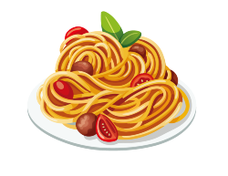

Chicken Alfredo Penne

Description
Nothing spells comfort like Italian food. Steaming bowls of pasta, buttery, roasted garlic bread, and tureens of the most flavorful sauces: it’s all right there. Sometimes, you want to bring that comfort into your very own kitchen and, well, we’ve got just the recipe for you. This easy chicken alfredo penne will have you saying ‘mangia!’ before you even know it.
Ingredients
for 6 servings
- 2 tablespoons unsalted butter
- 1 ½ lb boneless, skinless chicken breasts(680 g), cubed
- ½ teaspoon dried oregano
- ½ teaspoon dried basil
- ½ teaspoon kosher salt
- ½ teaspoon freshly ground black pepper
- 16 oz penne pasta(455 g), cooked and drained
- ¼ cup fresh parsley(10 g)
- ¼ cup shredded parmesan cheese(25 g)
Steps
- Melt the butter in a large pan over medium-high heat, then add the chicken breasts. Season with the salt, pepper, oregano, and basil. Cook 8-10 minutes, or until the chicken is fully cooked. Remove the chicken from the pan and set aside.
- Make the sauce: In the same pan over medium heat, melt the butter, then add the garlic. Cook until the garlic begins to soften. Stir in half of the flour at a time until incorporated. Gradually pour in the milk, stirring between additions, and cook until fully incorporated and the sauce begins to thicken. Season with the salt, pepper, oregano, and basil. Add the Parmesan cheese and stir until melted.
- In a large bowl, pour the sauce over cooked penne pasta, then add the chicken and toss well to combine. Add the parsley and Parmesan and toss again.
- Serve warm.
- Enjoy!